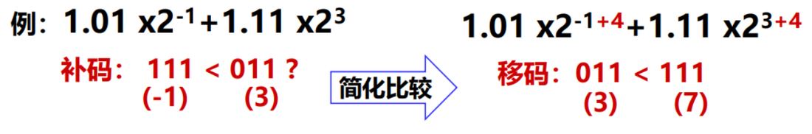
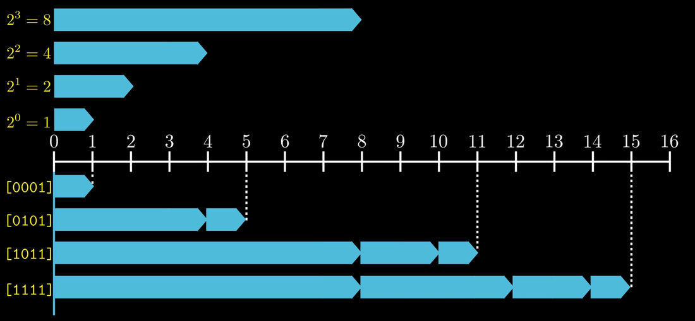
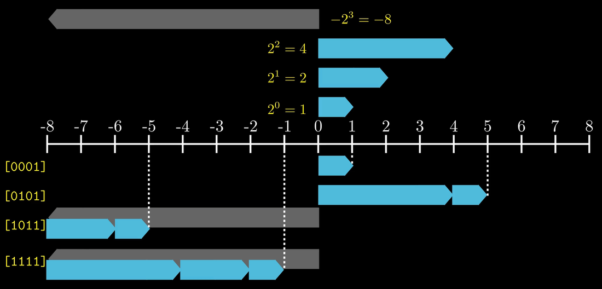
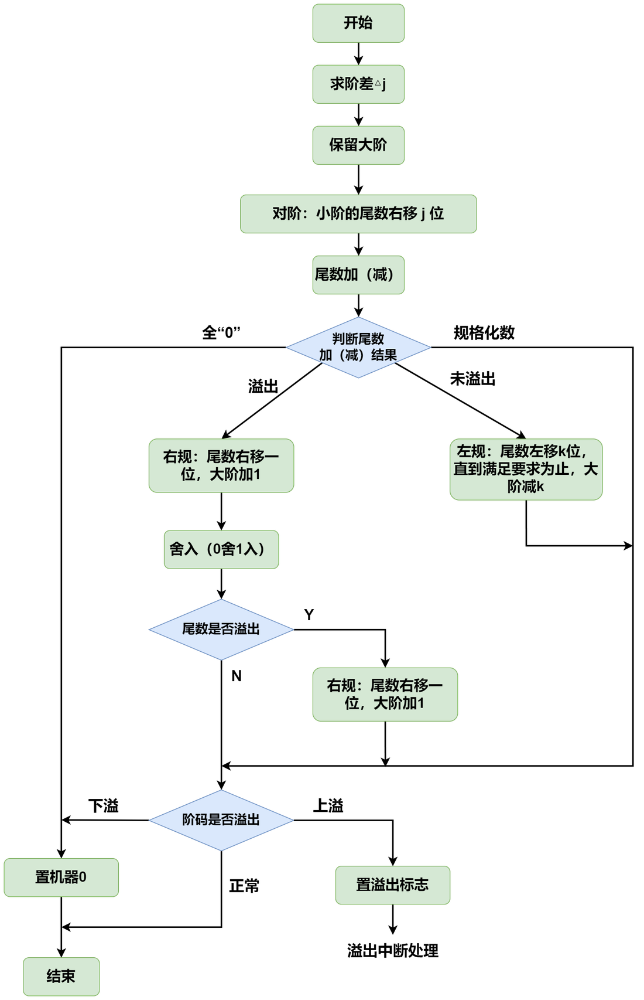
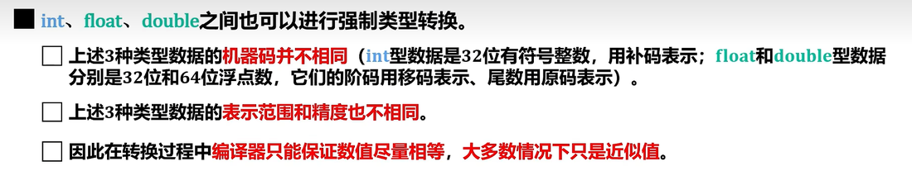
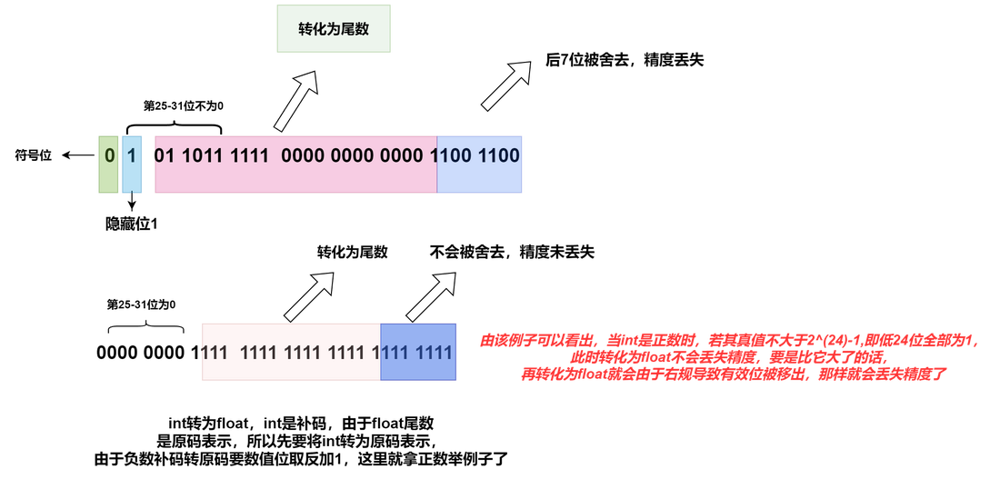
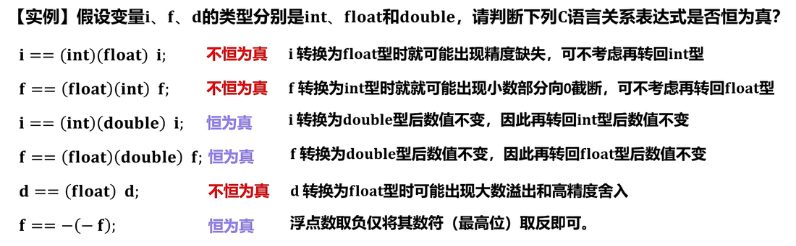
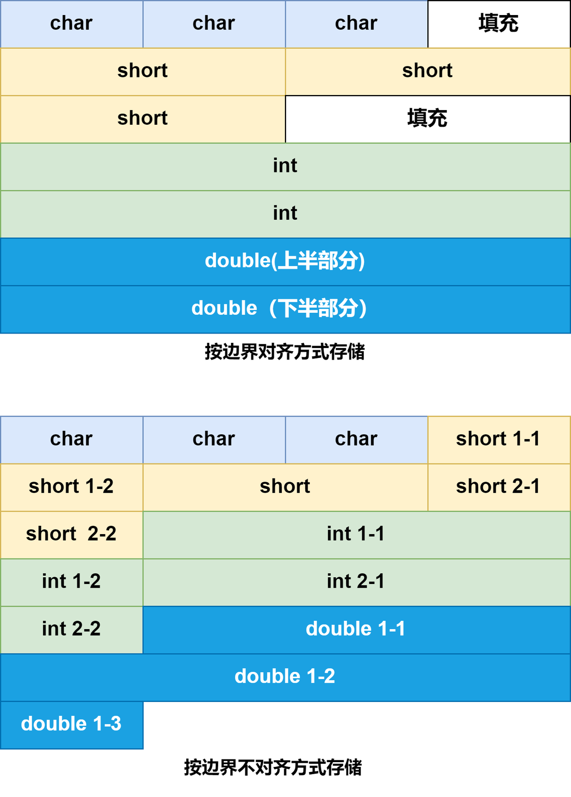
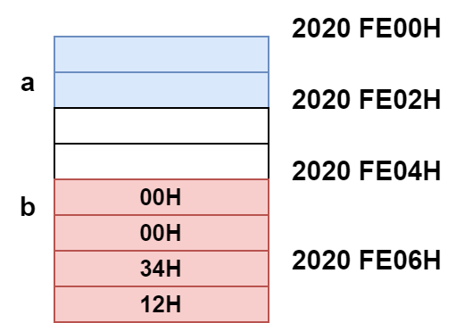
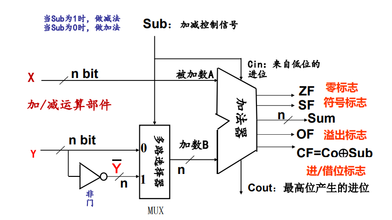

2.1 定点数的表示和运算
[图不可用 · 私有图床]
- 计算机内部所有信息都用二进制（即：0和1）进行编码，用二进制编码的原因：
- 制造二个稳定态的物理器件容易(电位高/低，脉冲有/无，正/负极)
- 二进制编码、计数、运算规则简单
- 正好与逻辑命题真/假对应，便于逻辑运算
- 可方便地用逻辑电路实现算术运算
- 机器数和真值：像这样带“”、“”号的数称为真值，可以将其理解为真正的数，一般用十进制来表示，也可以用二进制来表示。将数值数据在计算机中编码表示后的数据称为机器数，一般采用补码表示，也可以用原码、反码、移码来表示（即用0和1编码的计算机内部的0/1序列）
- 定点数：定点表示就是约定机器数中的小数点位置固定不变，小数点不再使用
.表示，而是约定其位置。理论上，小数点位置固定在任何一位都可以，但是在计算机中通常采用两种简单的约定：
- 定点整数：将小数点的位置固定在数据的最低位之后
[图不可用 · 私有图床]
- 定点小数：将小数点的位置固定在数据的最高位之前
[图不可用 · 私有图床]
- 有符号定点整数的表示（原码、补码、反码和移码）
- 原码：最高位表示真值的符号（1 表示负，0 表示正），其余各位表示真值的绝对值
[图不可用 · 私有图床]
优点：表示方法简单直观
缺点
- 真值在原码中有两种不同的表示，不利于程序员编程
- 原码加减法运算规则复杂，符号位不能参与运算，需要设计复杂的硬件电路。现代计算机不用原码表示整数，只用定点原码小数表示浮点数的尾数。
- 加减运算方式不统一
- 特别当 a<b 时，实现a-b比较困难
- 反码：正数的反码与原码一样，负数的反码其数值部分全部取反
[图不可用 · 私有图床]用途：反码通常用来作为由原码求补码或者由补码求原码的中间过渡；
优点：符号位可以参与运算
缺点：（在计算机中很少被使用）
- 最高位（符号位）产生的进位要加到运算结果的低位（循环进位）
- 真值在反码中有两种不同的表示
- 补码：
 正数的补码与原码一样，负数的补码是对其原码数值位按位取反然后末位加1；
正数的补码与原码一样，负数的补码是对其原码数值位按位取反然后末位加1；
- 原补码转换快捷手算方法：从右往左找到第一个1，然后将其左边的所有数值位按位取反即可；
- 引入补码的原因：在原码的加减运算中，由于最高位表示的是符号位，若将其直接参与运算，其得到的结果是错误的，除非改造ALU，但是成本会很高。联想到【如果有一个时钟，指针开始时指向的是10，如果要让其指向7，那么有两种方法，要么逆时针旋转至7，相当于做减法；要么顺时针旋转至7，相当于做加法】，我们可以用加法实现减法运算，为此引入了补码表示法。其表示方法为正数仍为其原码，负数为模（位补码的模为）与该负数绝对值之差。
- 补码的表示范围：位补码的表示范围为 ~，比原码多表示一个,例如，8位补码的表示范围为-128 ~ 127。
- 机器数0的表示：不同于原码和反码有正零和负零之分，补码的零只有一种表示方法，即数值位和符号位为全0.
- 补码表示的一些常见二进制形式：位补码的最小整数的二进制形式为; 表示的最大整数形式为;补码表示-1的形式为。
- 目前在计算机中普遍采用补码表示有符号定点整数，例如C语言中char、 short、 int、 long型整数都是补码表示。
- 为什么用补码表示带符号整数？ （50年代以来，所有计算机都用补码来表示带符号整数）
- 补码运算系统是模运算系统，加、减运算统一
- 数0的表示唯一，方便使用
- 比原码多表示一个最小负数
- 根据补码的设计思想和编码规则，以下技巧可以更快地分析负数补码的真值
补码实现了模运算，使其可以用加法来实现减法，并且符号位和数值位一同参与运算，方便了加法器的设计。以3位补码为例，其补码数轴如图所示:
[图不可用 · 私有图床]
- 在非负半轴上符号位为0，补码从000→011，真值从0→3不断增大。 在负半轴上，符号位为1，补码从100→111，真值从不断增大; 所以可以得到如下结论:补码符号位不变时，其真值随着数值位的增大而增大。该结论可以帮助比较补码的真值大小，例如补码 。
- 若补码之间跨越了正负半轴，直接通过符号位比较正负，例如
- 若把两个互为相反数的补码相加，得到的真值为0，但是最高位进位为1。例如
利用该结论可以
- 移码： 在真值的基础上加上一个偏置值，可以得到移码。位移码的偏置值通常取或。移码只用于表示定点整数。
- 当偏置值为时，则在补码的基础上，对符号位取反即可； (在数轴上，移码所表示的范围对应于真值在数轴上的范围向轴的正方向移动
 个单元)
个单元)
[图不可用 · 私有图床]
- 当偏置值为时，通常用于表示浮点数的指数部分(阶码)。
为什么要用移码来表示指数（阶码）?
便于浮点数加减运算时的对阶操作（比较大小）

移码由于偏置值的存在，使它可以按照无符号数比较的大小反映真值的相对大小。（保持了真值原有的大小顺序）
假设编码字长为 位， 移码偏置值为 ,各种码的特性总结
| 整数合法表示范围 | 最大的数 | 最小的数 | 真值0的表示 | 用途 |
原码 | ~ | 表示浮点数的尾数 | |||
反码 | ~ | 某些数码转换的中间形式 | |||
补码 | ~ |
| 机器数，表示计算机中的有符号数 | ||
移码 | ~ |
| 表示浮点数的指数（阶码） | ||
无符号 整数 | ~ | |
[图不可用 · 私有图床]
[图不可用 · 私有图床]
- 定点小数的原/反/补码表示：
其小数表示与整数表示的原理类似，例如，机器字长为8位，若,则的原码，反码，补码的表示分别为；
对两个定点小数A,B进行加法/减法时，需要先转换成补码，从最低位开始，按位相加(符号位参与运算)，并向更高位进位。
注意定点小数和定点整数的符号扩展位置不一样，定点小数在数值位后面扩展，定点整数在数值位之前扩展。
[图不可用 · 私有图床]
2.2 整数表示与运算
2.2.1 无符号整数的表示与运算
- 计算机中的数均放在寄存器或内存中，一般寄存器的位数与机器字长相等。无符号整数指整个机器字长的全部二进制位均为数值位，没有符号位，相当于数的绝对值。
- 一般在全部是正数运算且不出现负值结果的场合下，可使用无符号数表示。例如，地址运算，编号表示，等等
- 在C语言中，只需要在
int、short等关键字前加unsigned即可定义一个无符号数。当无符号数与有符号数一起运算时，编译器默认将有符号数转换为无符号数再参与运算，运算结果为无符号数。 - 总是整数，所以很多时候就简称为“无符号数”
无符号数的加法：直接 位二进制按位相加即可；
无符号数的减法：计算 ,可以将其转化为等价的加法，将 的 位全部按位取反末位加1，然后与 相加。
2.2.2 有符号整数的表示和运算
有符号整数的表示即上面介绍的原码、反码、补码等编码方式，下面介绍其运算方式。
2.2.2.1 移位运算
当计算机没有乘除法运算电路时，可以采用移位和加法相结合的方法，来实现乘除运算。对于任意二进制数，无论是无符号数还是有符号数，将其相对于小数点做位左移或者右移时，相当于该数乘以或除以。由于机器字长是固定的，当机器数左移或右移时，都会使其低 位或高 位出现空缺，因此需要对空缺部分补充0或1.
- 逻辑移位：不考虑符号位，将操作数视为无符号数，无论左移还是右移都是添
对于无符号整数的逻辑左移，如果最高位移出的 是1，发生溢出。
- 算术移位：编译器是通过补码形式进行算术移位运算，其规则为：算术左移时，低位补0，高位移出；算术右移时，高位补符号位，低位移出。
算术移位特别需要注意，原来的符号位一样移动。因为移位是宏观的变化，硬件在做移位的时候不允许任何元素保持不动。所以左移时，正数有可能变为负数，负数有可能变为正数。因为左移原来的符号位丢了，右边补的是0。而右移时不会改变符号性，因为右移是将数据减半，减半不可能减成相反的符号的。而左移可能溢出，如果补码算术左移使得符号位发生改变，则说明发生溢出，例如8位补码 和 算术左移后均发生溢出。
虽然C语言没有明确规定是采用算术移位还是逻辑移位，但大多数机器对无符号数采用逻辑移位的方式，对有符号数(补码)采用算术移位的方式。因此，编译器只要根据移位数的类型就能选择是采用算术移位还是逻辑移位。
- 表达式 表示对数 左移位。事实上，对于左移来说，逻辑移位和算术移位的结果都是一样的，都是丢弃个最高位，并在低位补上 个0。 每左移一位，相当于对真值扩大一倍，所以左移可能会发生溢出。左移 位，相当于 。
- 表达式 > k">表示对数 右移位。 每右移一位，如果移出的是0，则相当于把真值缩小一半，右移位，相当于数值 。若移出的是非 0，则说明不能整除 。
移位寄存器的基本构造和操作
- 移位寄存器的结构：移位寄存器通常包含一串触发器（例如D触发器），每个触发器存储一个位。数据可以从一端输入，随着时钟信号的每一次跳变，数据位会从一个触发器传递到下一个。
- 右移操作：
- 在执行右移操作时，每个触发器的内容向右移动到下一个位置，最左边的位置会变空，而最右边的位则被移出寄存器。
- 对于逻辑右移，通常左端会补零。
- 对于算术右移，左端通常会补上移位前的最高位（符号位）。
- 实现算术右移的方法：符号位复制：在算术右移时，符号位（最左边的位）会被复制并填充到移位后左侧空出的位。这可以通过多种方法实现：
- 控制逻辑：可以在移位寄存器的设计中加入逻辑门（如与门、或门等），使得在执行右移操作时，符号位能够被自动复制到左侧空出的位置。
- 条件式硬件连接：在更高级的设计中，可能使用可编程逻辑或条件式控制信号，根据移位操作的类型（逻辑右移还是算术右移），动态选择是补零还是补符号位。
- 移位控制：控制单元将基于操作的指定（如算术右移指令）来设置移位寄存器的行为，确保正确的位被复制到正确的位置。
通过这种方式，移位寄存器能够在硬件级别上快速高效地执行算术右移操作，同时确保数值的符号位保持一致，从而维持数值的正确性。
【例题】：若计算机的机器字长为，数据以补码形式表示，并且机器数含 1 位符号位， 现有整数 ，其中 ，,, 请分别求 和 的机器数，并指明计算结束后的溢出标志 的值。
answer
解：， 相当于将 算术左移1位，左移后为 ，, ,两正数相加却为负数，结果溢出，因此;
相当于将算术右移两位， 为正数，右移高位补 ， 的机器数为 , 所以的机器数为 ;相当于算术左移1位，的机器数为,所以为,二者相加结果为,两个异号的数相加，不会溢出，所以
2.2.2.2 补码加减运算
- 补码加法：两个数的补码相加，符号位参与运算，且两数和的补码 = 两数的补码之和。符号位相加后若有进位，进位数字直接舍去。
- 补码减法：对于减法，因为， 则
求 只需将 连同符号位在内，按位取反， 末位加1即可。
这个规则当( 位补码 ) ···时失效，例如 的 位补码为 按此规则得到的 的补码为,但这显然不正确。这是因为 位补码不能表示 。但是注意，在不溢出的情况下，按此规则计算补码减法仍然正确、例如,结果仍然正确。这体现了按此规则计算补码减法的通用性。
2.2.2.3 溢出概念及其判别方法
溢出即指运算结果超出机器数的表示范围，关于溢出有以下结论：
- 两个异号数相加 或 两个同号数相减，不会溢出；
- 两个同号数相加 或 两个异号数相减，有可能溢出；
只考虑有符号数，在计算机中，补码定点数加减运算常用的溢出判断方法有以下几种：
- 判断结果与操作数符号是否相等
减法运算在计算机内部是用加法器来实现的，因此无论是加法还是减法，若送至加法器的两个操作数的符号相同，结果又与原操作数符号不同，则表示结果溢出，否则未溢出。
- 判断最高位进位和次高位进位是否相同
若符号位（最高位）和最高数值位（次高位）的进位相同，则说明没有溢出，若不同则溢出。
假设符号位进位为 , 最高数值位的进位为 , 若表示溢出，则逻辑表达式为
推导：由于补码减法运算也是转化为加法运算，因此溢出只会发生在以下两种情况
- 正数+正数：原来的两个加数的符号位（最高位）都为，如果两个加数相加完之后，结果的符号位变为，说明溢出（因为正数相加不可能为负数），此时来自次高位的进位一定为，而符号位的进位为；
- 负数+负数：原来的两个加数的符号位（最高位）都为，如果两个加数相加完之后，结果的符号位变为，说明溢出（因为负数相加不可能为正数），此时来自次高位的进位一定为，而符号位的进位为；
- 采用双符号位判断
双符号位的补码又叫模 补码， 运算结果的两个符号位 相同， 表示未溢出；若不同则表示溢出，此时最高位的符号代表计算结果的真正符号。
符号位的各种情况如下：
- ：表示结果为正数，未溢出；
- ：表示结果为负数，未溢出；
- ：表示结果正溢出；
- ：表示结果负溢出；
- 将其结果手算出来，看结果是否超过了当前机器字长所能表示的范围即可；
上面介绍的是有符号数的溢出判断，对于
无符号数的溢出判断，可以通过 标志位判断，当 标志位等于1，即最高位向更高位产生进/借位时，无符号数加减法溢出。具体来说，当无符号数加法运算最高位产生进位，或无符号数减法运算最高位产生借位时，结果溢出。（2023年考察）
2.2.3 无符号整数和有符号整数的位权
- 无符号整数的位权
对于 位无符号数 ，其第 位的位权为 ,那么我们可以通过公式 来计算无符号数编码的真值。
例如

如图，对于向量的第位，用一个长度为2的次方的条状图表示。每个位向量对应的值，就等于所有值为 1 的位，所对应的条状图的长度之和。例如编码0101，就是长度为4（2的2次方）的条状图加上长度为1（2的0次方）的条状图的长度之和。
我们发现这种条状图只能表示非负数，为此引入下面的有符号数表示。
- 有符号数的位权
对于补码表示的 位有符号整数 来说，其第 位的位权为 , 最高位的位权为 , 即只有最高位的位权与无符号数不同(为负权，是无符号数最高位权值的相反数)。
可以通过公式来计算补码编码的真值。举例如下

通过位权的角度来分析补码的表示范围：
- 当 位补码的最高位设置为 , 其他位全部清 时，考虑补码位权可知， 此时只保留了负权，而清除了所有的正权，这种情况下， 位补码取得最小值 ,对应的二进制编码为。
- 当 位补码的符号位设置为 时， 其他位全部设置为 时， 考虑补码位权可知， 此时清除了负权， 而保留了所有的正权，该情况下 位补码取得最大值 ，对应的二进制编码为。
如果知道了该知识点，则【2015】年的真题可以手到擒来
【2015年计组】：由 个 “1” 和 个 “0” 组成的 8 位二进制补码， 能表示的最小整数为 （）
A: -126 B:-125 C:-32 D:-3
answer
解析：要想表示最小，由于符号位是负权值，因此符号位得设置为1，还有两个1其位权为正数，放在最后两位，其正权值最小，机器数表示为,值为
【扩展】：原码和反码的位权：
对于原码来说，其最高位用来决定其余各位权值的正负。符号位若为正，数值位则全为正权；若符号位为负，数值位则全为负权。
对于反码来说，其最高位（符号位）的权值为 而不是 ，其余位的权值和补码一样。
2.3 浮点数的表示和运算
2.3.1 浮点数的表示
- 表示格式： [图不可用 · 私有图床]
- 阶码 ：常用 补码 或 移码 表示的定点整数，其位数反映了浮点数的表示范围，阶码的真值反映了小数点的实际位置。
- 尾数 ：常用 原码 或 补码 表示的定点小数， 其位数 反映了浮点数的精度 ，其数符表示浮点数的正负。
- 浮点数的真值：
通俗地说，尾数给出一个小数，阶码指明了小数点要向前/向后移动几位。
示例： ， 阶码、尾数均用补码表示，求 的值
解：阶码 对应真值为 , 尾数转为原码表示为,真值为,因此 的真值为
- 浮点数尾数的规格化
尾数的位数决定浮点数的有效数位，有效数位越多，数据的精度越高。为了在浮点数运算过程种尽可能多地保留有效数字的位数，使有效数字尽量占满尾数数位，必须通过调整阶码和尾数的大小对浮点数进行规格化操作。
规格化浮点数：规定非零的浮点数在尾数的最高数位上保证是一个有效值。
- 左规：当运算结果的尾数最高数位不是有效位，需要进行左规。左规时，将尾数算术左移 一位，阶码减1；左规可能要进行多次。
- 右规：当浮点数运算结果尾数出现溢出（双符号位为 或 时），将尾数算术右移一位，阶码加1；
采用双符号位时，当发生溢出时，可以挽救。因为更高的符号位是正确的符号位。
【2009年真题】年真题就考到了该知识点。
右规示例：[图不可用 · 私有图床]
[图不可用 · 私有图床]
- 规格化的原码尾数，最高数值位一定为1；
- 规格化的补码尾数，符号位与最高数值位一定相反；
这两点必须记住！！！
为了确保满足规格化的要求，补码的最高数位与符号位相反，在求其表示的尾数的最大值或最小值的机器数表示时，我们依旧可以采用位权的思想，当该数为负数时，符号位和最高数位都已确定，剩下的位权皆为正权，若全为即，则为负数最大值；若全为 即 ，则为负数最小值，符号位的位权为-1，所以最小值为 .
- 表示范围
[图不可用 · 私有图床]
当浮点数阶码小于最小允许值时，发生下溢，此时通常将结果置为 +0（符号位为 0）或 -0（符号位为1），按机器零处理；当浮点数阶码超过最大允许值时， 称为上溢，此时机器产生异常，停止运算，也有的机器会将结果置为 或
2.3.2 标准
[图不可用 · 私有图床]
这里的临时浮点数已经过时了，现行标准已经改为 位浮点数()。
标准里的阶码 采用 移码 表示， 其偏置值为
[图不可用 · 私有图床]
在计算阶码的真值时，一般先将阶码看作无符号数计算，然后减去偏置值，单精度和双精度的偏置值分别为 和 。例如 位阶码 表示指数部分为.
尾数用原码表示，有一个隐藏位为1，省略。
- 必须熟练掌握十进制数与 单精度浮点数 的相互转换
- 转十进制（真值）（2013、2014、2020、2023年考察）
例:IEEE 754的单精度浮点数CO A0 00 00H的值时多少。
answer
C0 A0 00 00H→1100 0000 1010 0000 0000 0000 0000 0000
数符=1→是个负数
尾数部分=.0100..._(隐含最高位1)→尾数真值=(1.01)
移码=10000001，若看作无符号数=129D
单精度浮点型偏移量=127D
阶码真值=移码-偏移量
浮点数真值
- 十进制用 表示（2011、2022年考过）
对于C语言代码
float y = -36.625，若编译器将 分配在一个32位寄存器中，求该寄存器内容。
answer
解：将 用二进制小数表示为 ，将 右移，使得小数点前面只保留一位“”,得
数符 ，尾数部分 =（隐含最高位1）
阶码真值 = 5， 移码
组合得
- 单精度浮点型所能表示的最小绝对值，最大绝对值是多少？
阶码全0和阶码全1均被用来表示特殊值，因此阶码的范围为，机器数表示最大为 , 最小为， 其真值的范围为
[图不可用 · 私有图床]
2012年考察了 所能表示的最大正整数，即规格化的最大绝对值; 2018年考察了 所能表示的最小规格化正数；
如果继续考察 的规格化表示，可能的出题形式有 能表示的最大负数的机器数是多少？能表示的最小规格化负数的机器数是多少？
【注意】：最大负数绝对值最小，最小负数绝对值最大，别混淆喽！其答案分别为 和 .
另外注意一下 的规格化最大绝对值与最小绝对值，其出题模式也可能换个说法，类似于求型变量所能表示的最接近于 0 的规格化负数，或所能表示的正数的取值范围之类。
关于 历年还未考过，要注意一下！
- 的特殊表示
标准中, 浮点数包含三种状态
normal number(规格数)
subnormal number(非规格数)
non-number(特殊数)
这三种状态是通过指数部分区分的, 而且很容易区分.以32位浮点数为例, 其内存状态分为3部分:
1位符号位 8位指数位 23位尾数位
其中, 如果8位指数位全为0, 就代表当前数是个非规格数. 或者说, 形如 00000000 格式的数就是非规格数.
如果8位指数位全为1, 就代表当前数是个特殊数. 或者说, 形如 11111111 格式的数就是特殊数.
如果8位指数不全为0, 也不全为1(也就是除去以上两种状态外, 剩下的所有状态), 这个数就是规格数.
随便几个例子: 10101100 就是一个规格数
可见: 非规格数和特殊数是两种特殊状态, 规格数则是非常常见的状态.
为什么要把浮点数分为这三种状态呢? 答案当然是有用啊, 而且作用相当直观:
规格数: 用于表示最常见的数值, 比如1.2, 34567, 7.996, 0.2. 但规格数不能表示0和非常靠近0的数.
非规格数: 用于表示0, 以及非常靠近0的数, 比如1E-38.
特殊数: 用于表示"无穷"和"NaN":
浮点数的存储和计算中会涉及到"无穷"这个概念, 比如:
32位浮点数的取值范围是
[图不可用 · 私有图床]
如果你要往里面存储4e38(这超过了最大的可取值), 32位浮点数就会在内存中这样记录 "你存储的数超过了我的最大表示范围, 那我就记录你存储了一个无穷大..."
浮点数的存储和计算中还会涉及到"NaN (not a number)"这个概念, 比如:
你要给一个负数开根号(如 √-1), 但是ieee754标准中的浮点数却不知道该怎么进行这个运算, 它就会在内存中这样记录 "不知道怎么算, 这不是个数值, 记录为NaN"
[图不可用 · 私有图床]
上面我们提到了所能表示的最小绝对值，那个是规格化数，如果想要用 表示绝对值还要小的数，怎么办呢？还记得我们在移码中提到的用做特殊用途的阶码全0，和阶码全1吗，下面它们就要派上用场了！
- 当阶码全0，尾数不全为0时，用来表示非规格化小数，其表示的数的真值为
【注】：此时，隐含最高位变为 ， 阶码真值并不是 ， 而是固定视为 ， 这点要注意！这样，就可以用 表示比规格化最小绝对值还要小的数了！这个知识点【2023年】刚考察过。
- 当阶码全0，尾数全0时，表示真值
- 当阶码全1，尾数全0时，表示无穷大
引入无穷大，使得计算过程中出现 的情况下程序可以继续运行，而不会发生异常。无穷大数既可以作为操作数，也可能是运算的结果。
- 当阶码全1，尾数不全为0时，表示非数值
“NAN”(Not a Number)
引入非数既可以检测非初始化值，又可以使得计算出现异常时程序能继续下去。
注意到没有: 非规格数的最大值是:
规格数的最小值是:
两者之间实现了非常平滑的过度, 非规格数的最大值非常紧密的连接上了规格数的最小值
非规格数 "一点点逐渐变大, 最后其最大值平稳的衔接上规格数的最小值", 这种特性在ieee754中被叫做逐渐溢出(gradual underflow)
明白了这一点, 就很容易想通:
① 为什么规定非规格数的尾数前隐藏的整数部分是 0. 而规格数尾数前隐藏的整数部分是1.
② 为什么非规格数的真实指数的计算公式是 1 - bias, 而规格数的真实指数的计算公式是 指数部分的值 - bias 了
仔细思考一下, 就是这些设计实现了逐渐溢出这种特性.
↑ 关于第①点: 这使得非规格数的尾数取值范围是[0,1), 而规格数的尾数取值范围是[1,2), 两者平滑的衔接在了一起
↑ 关于第②点: 这使得对于32位浮点数来说, 非规格数的真实指数固定为-126, 而规格数的指数是[-126, 127], 两者也平滑的衔接在了一起...
特殊表示总结（1~4列为单精度浮点数，5 ~ 8列为双精度浮点数）
值的类型 | 符号位（1位） | 阶码（8位） | 尾数（23位） | 真值 | 符号位(1位) | 阶码（11位） | 尾数（52位） | 真值 |
正零 | 全 | 全 | 全 | |||||
负零 | 全 | 全 | 全 | |||||
正无穷大 | 全 | 全 | ||||||
负无穷大 | 全 | 全 | ||||||
非规格化小数 | 或 | 不全为 | 或 | 全 | 不全为 | |||
非数 | 或 | 不全为 | 或 | 不全为 | ||||
最大正数 | 全 | 全 | ||||||
最小正数 | 全 | 全 | ||||||
最大负数 | 全 | 全 | ||||||
最小负数 | 全 | 全 |
2.3.3 浮点数的加减运算

- 操作数的检查
当两个浮点数进行加减运算时，需要检查操作数是否为0。一种情况是阶码和尾数均为0，浮点数值为0；另一种情况是浮点数下溢， 浮点数被当作机器0处理。若加数、被加数或减数为0.则结果为另一个操作数；若被减数为0，结果为减数的相反数。如果都不为0，转换格式后进行以下操作。
[图不可用 · 私有图床]
- 比较阶码大小完成对阶操作
首先求阶差，将两个数的阶码相减，阶差记作，若， 说明两数阶码相等，无需对阶；若,就需要对阶。对阶时，小阶向大阶对齐，将小阶数的尾数右移位，阶码加,使得阶码对齐。
[图不可用 · 私有图床]
- 小阶向大阶对齐的原因：如果是”大阶向小阶对齐”， 尾数需要左移，则其数值部分的高位需要被移出；而小阶向大阶对齐，尾数右移，需要移出的是尾数数值部分的低位，这样损失的精度更小。
- 由于是小阶向大阶对齐，因此不会出现溢出现象。
- 尾数加减
将对阶后的尾数按定点小数加减运算规则运算。若运算后的尾数是规格化的，则直接结束流程，得出结果。否则，需要进一步进行规格化处理。
[图不可用 · 私有图床]
- 结果规格化
若尾数采用的是双符号位，当尾数相加得到的结果符号位为10 或 01 时，需要右规，如本例，
[图不可用 · 私有图床]
若该浮点数采用 标准，其规格化尾数的形式是 。 尾数相加减后会得到各种结果，例如
出现 这种情况，需要进行右规，尾数右移一位，阶码加1。尾数右移时，最高位1被移到小数点前一位作为隐藏位，最后一位移出时要考虑舍入；
出现这种情况，需要进行左规，尾数每左移一位，阶码减1。需要一直将第一位1移到小数点左边。
- 舍入处理
本例中无需舍入。
在对阶操作或右规时，尾数需要向右移动，这样，尾数的最低位就会被移出。为了保证运算精度，移出的位通常会被保留下来参与运算，最后再对结果进行舍入处理，使其符合 标准。常见的舍入方法有下面三种：
- “0” 舍 “1” 入法：类似于十进制中的“四舍五入法”，即在尾数右移时，被移去的最高数值位为0，则舍去；被移去的最高数值位为1，则在尾数的末尾加1，若破坏规格化结果，则还需要再次进行规格化处理。
- 末位恒置“1”法：尾数右移时，不论丢掉的最高数值位是“1”还是“0”，都使右移后的尾数末尾恒置为“1”。（损失一位精度，但误差累积较小）
- 截断法：直接截取所需位数，丢弃后面的所有位，这种舍入处理最简单。（会导致误差累积）
IEEE754 标准中的 4 种舍入模式
- 就近舍入（向偶数舍入）：即十进制下的 “四舍五入”
- （1）例如有效数字超出规定数位的多余数字是 1001，它大于超出规定最低位的一半（即 0.5），故最低位进 1；
- （2）如果多余数字是 0111，它小于最低位的一半，则舍掉多余数字（截断尾数、截尾）即可；
- （3）对于多余数字是 1000、正好是最低位一半的特殊情况，最低位为 0 则舍掉多余位，最低位为 1 则进位 1，使得最低位仍为 0（偶数）。
- 朝 0 舍入（正数向下舍入、负数向上舍入）：即朝数轴零点方向舍入，即直接截尾。
- 朝正无穷舍入（向上舍入）：对正数而言，只要多余位不全为 0 则向最低有效位进 1；负数则直接截尾。
- 朝负无穷舍入（向下舍入）：对负数而言，向最低有效位进 1；正数若多余位不全部为 0 则简单截尾。
- 判断溢出（2015年考察）
在进行尾数规格化和尾数舍入时,可能会对结果的阶码执行加、减运算。因此,必须考虑结果的指数溢出问题。
- 若一个正指数超过了最大允许值(或),则发生指数上溢,机器产生异常,也有的机器把结果置为(数符为0时)或(数符为1时)后,继续执行下去。
- 若一个负指数低于最小允许值( -149 或 -1074 ),则发生指数下溢,此时,一般把结果置为(数符为0时)或(数符为1时),也有的机器引起异常。
IEEE 754表示很小的数会先进入非规格化数，然后逐渐下溢到0,对于非规格化的情况，当尾数f为0.0....1时，指数的最小允许值为-126-23=-149或-1022-52=-1074
溢出判断是在上述尾数规格化 和 尾数舍入 过程中进行的，只要涉及阶码求和/差，就可能发生溢出。发生溢出的情况可能有以下三种：
右规和尾数舍入：一个数值很大的尾数舍入时,可能因为末尾加1而发生尾数溢出,此时,可以通过右规来调整尾数和阶。右规时阶加1,导致阶增大,因此需要判断是否发生了指数上溢。只有当调整前的阶码为, 加后,才会变成 而发生上溢;如果右规前阶码已经是 ,右规后变,因而会造成判断出错。所以,右规前应先判断阶码是否为全1,若是,则不需右规,直接置结果为指数上溢;否则,阶码加1,然后判断阶码是否为全1来确定是否指数上溢。
左规：左规时数值位逐次左移,阶码逐次减1,所以左规使阶码减小,故需判断是否发生指数下溢。其判断规则与指数上溢类似,首先判断阶码是否为全0,若是,则直接置结果为指数下溢;否则,阶码减1,然后判断阶码是否为全0来确定是否指数下溢。
从浮点数加、减运算过程可以看出,浮点数的溢出并不以尾数溢出来判断,尾数溢出可以通过右规操作得到纠正。运算结果是否溢出主要看结果的指数是否发生了上溢,因此是由指数上溢来判断的。(即2015年真题所说的尾数溢出时结果不一定溢出)
下例为 加减法的示例，目前只考察过补码表示尾数和阶码的浮点数的加减运算，由于 加减运算的尾数加减涉及到了原码加减运算，所以有点麻烦，考察可能性不大，了解即可。
用 单精度浮点数加减运算计算
解：
[图不可用 · 私有图床]
[图不可用 · 私有图床]
[图不可用 · 私有图床][图不可用 · 私有图床]
2.4 C语言中的类型转换、数据对齐与大/小端存放方式
该考点考过8次选择，2道大题与之有关，属于重要知识点！
2.4.1 整数类型强制转换
类型 | ||||
（16位） | | 机器数不变，改变解释方式 | 符号扩展 | 先符号扩展为，再改变解释方式 |
（16位） | 机器数不变，改变解释方式 | | 高16位零扩展，再改变解释方式 | 高16位零扩展，无符号数真值不变 |
（32位） | 高位截断 | 高位截断 | | 机器数不变，改变解释方式 |
（32位） | 高位截断 | 高位截断 | 机器数不变，改变解释方式 | |
- 有符号数与无符号数的转换
C语言允许在不同的数据类型之间做强制类型转换，有符号与无符号整数的互相转换的规则是：不改变机器数（存储值不变），仅改变这些位的解释方式。
【例1】：求 的值
short x = -4320;
unsigned short y = (unsigned short) x;answer
解：，保持机器数不变，将其当作无符号数解释，得
【例2】：求 的值 （2019年真题改编）
unsigned short usi = 62080;
short si = usi;answer
解： 的机器数为 ，改变解释方式为补码，将其转变为原码为， 即 的值为 ;
【提速小技巧】：当遇到同类型（同长度）的有符号数 与 无符号数 转换的题型时，若 为负数，可以用简便方法 （ 为数据位数）；
举例如下:3位机器数按排列，若为补码编码，真值为分别为按无符号数解释真值为，显然对于同一码字100所表示的两个数，其余码字同理。
该结论可以利用位权进行简单证明，
位机器数解释为补码si和无符号数，位权展开为;
若 为正数，显然;若 为负数，有，所以
。考试中大多考查 为负数的情形。
- 不同整数类型之间转换
C语言之支持在不同字长的整数之间进行数据转换，例如 型变量与 变量相加时，会自动对 变量进行强制类型转换，通过符号扩展将其变为 变量。
- 大字长变量向小字长变量强制类型转换时，系统把高位部分直接截断，低位直接赋值；
- 小字长变量向大字长变量强制类型转换时
- 若原数字是无符号数，进行零扩展（即高位直接补零）；
- 若原数字是有符号数，进行符号扩展（即高位直接补充符号位）；
【例3】：求 的值
int x = -34990;
short y = (short)x;answer
解：， 高16位直接截断，，所以
【例4】：求 的值
short x = -1234;
int y = (int)x;answer
解：， 将其高位补16个1（符号扩展）得到，所以
或者换个思路， 的表示范围更大，这两个变量之间的转换不会有精度丢失，所以不变；
【例5】： 的机器数为？(2012真题)
unsigned short x = 65530;
unsigned int y = x;answer
解： 的机器数为，由于是无符号数，所以高位补0，得到 的机器数为
【例6】：求 的值
short x = -1234;
unsigned int y = (unsigned int)x;answer
解：，将 的高位补充 16个1（因为 是有符号数，进行符号扩展）得到，将其解释为无符号数得到 .
【例7】：求 的值
short si = -32768;
unsigned short usi = si;
int i = usi;answer
解： ，无符号数 与它机器数一样，然后把它的值赋给 型变量 ， 由于后者足以表示前者的表示范围，进行零扩展即可,则 的值为
2.4.2 整数与浮点数强制类型转换

类型 | |||
（4B） | | 比较大的数无法精确表示，会丢失精度 | 完美转换 |
（4B） |
| | 完美转换 |
（8B） |
| 大数可能会溢出； | |
- 转换为
由于 表示范围比 大，因此不会溢出；但是 尾数共有位，而 数值部分有 位，如果 的第 位非时，需要舍入，会丢失精度;

- 或 转换为
由于 的尾数部分有53位，表示范围更大，有效位更多，因此将 或 转换为 不会发生舍入或溢出。
- 转换为 和
由于 的尾数部分有53位，表示范围更大，有效位更多，因此大数转换时可能发生溢出，高精度数转换时，会发生舍入。
- 或 转换为
由于 的表示范围小于 和 ，因此当 或 数值较大时转为可能会发生溢出；
由于 不能表示小数，因此转换后会将小数部分截断，所以可能会丢失精度；
【例题】
- 假定变量 的类型分别为。判断下面哪些说法正确。
①x == (int)(float)x ② x == (int)(double)x ③ d == (double)(float)d ④f == (float)(double)f⑤f == -(-f) ⑥ d * d >= 0 ⑦(f+d)-f==d ⑧(d+f)-d==f
answer
解：①假，②真，③假，④真，⑤真，浮点数有一个数符位，表示其真值的正负性，因此浮点数取反只要改变符号位即可；⑥真，注意有可能溢出到正无穷；
⑦假，如果二者阶码相差过大，相加后对结果舍入可能会将阶码小的那个忽略掉，例如f=1e20,d=1.0，执行f+d会将结果舍入为1e20，则等式左边为0，两边不等；⑧假，与⑦同理。
- 假定变量 的类型分别为，已知 ，则下列结果正确的是（）
A:i == (int)(float)i B:f == (float)(int)f C:f == (float)(double)f D:(d+f)-d==f
answer
解：A错，超出了 尾数所能表示的精度范围，精度丢失；B错， 表示不了小数，精度丢失，C正确， 很厉害，D错，二者指数相差太大，对阶后， 的尾数部分原来的有效位全部移出，直接变为，等式左边为0则等式不成立。

2.4.3 数据的存储与排布
数据类型 | C声明 | 无符号版本 | （32位）字节数 | （64位）字节数 |
字符型 | char | unsigned char | 1 | 1 |
短整型 | short | unsigned short | 2 | 2 |
整型 | int | unsigned | 4 | 4 |
长整型 | long | unsigned long | 4 | 8 |
32位整数 | int32_t | uint32_t | 4 | 4 |
64位整数 | int64_t | uint64_t | 8 | 8 |
字符指针 | char * | | 4 | 8 |
浮点型 | float | | 4 | 4 |
双精度浮点型 | double | | 8 | 8 |
请注意，在 C 语言中，char 类型默认是有符号的，但可以通过指定 signed 关键字来明确表示有符号字符型。同样的，指针类型的大小会根据操作系统的位数变化（32位系统上是4字节，64位系统上是8字节），这是因为指针需要能够指向系统中任何位置的地址。
大多数计算机使用8位的块，也就是字节，作为最小可寻址的内存单位。机器级程序将内 存视作一个巨大的字节数组，称为虚拟内存。内存的每个字节都由一个唯一的数据来标识， 称为它的地址。
对于跨越多个字节的程序对象，我们必须建立两个规则:
- 这个对象的地址是什么？ -- 以最低地址作为该对象的存储地址
- 如何在内存中排列这些字节？ --大端方式和小端方式、数据对齐
2.4.3.1大小端方式
对于第一个规则，我们的回答是：在几乎所有的机器上，多字节对象都被存储为连续的字节序列，对象的地址为所使用字节中最小的地址。例如，如果一个类型对象的地址是 ，那么该对象存储在 上。
对于第二个规则，我们给出两种规则，分别是大端法和小端法。
考虑一个 位的整数，其位表示为 ,我们将 称作最高有效位， 称作最低有效位。这里我们要求 是8的倍数，那么这些位就能被分组为字节，其中最高有效字节包含位 ，最低有效字节包含位 ，其他字节包含中间的位。
某些机器(intel 80x86) 选择在内存中按照从最低有效字节到最高有效字节的顺序来存储对象，称为小端法，而另外一些机器(IBM360 /370,MIPS)则按照从最高有效字节到最低有效字节的顺序来存储，称为大端法。 这里举一个例子帮助同学们理解： 某机器数的16进制表示为 01 23 45 67H,存放在从0001H开始的内存单元中。
大自然，小机器
当采用小端法时：
0001H | 0002H | 0003H | 0004H |
67H | 45H | 23H | 01H |
当采用大端法时：
0001H | 0002H | 0003H | 0004H |
01H | 23H | 45H | 67H |
例题：以下是一个由反汇编器生成的一行针对IA-32处理器的机器 级代码表示文本：
80483d2: 89 85 a0 fe ff ff mov %eax, 0xfffffea0(%ebp)
其中，80483d2是十六进制表示的指令地址， 89 85 a0 fe ff ff 是机器指令， mov %eax, 0xfffffea0(%ebp) 是对应的汇编指令 ，0xfffffea0是立即数 。请问：立即数 0xfffffea0 的值和所存放地址分别是多少？ IA-32是大端还是小端方式？
answer
立即数0xfffffea0所存放的地址为0x80483d4；
立即数0xfffffea0的值为-352；
IA-32采用的是小端方式！
2.4.3.2数据对齐
计算机为什么要进行数据对齐呢？
假设某计算机按字节编址，主存每次最多发送32位数据,并与宽度为32位的存储器总线相 连，假设我们访问的某个double类型变量并没有遵循对齐规则(在32位计算机下存放的起始地址并不整除4),会发生什么情况?
当存储器一次性将32位数据通过总线发送给CPU时，CPU并不清楚存储体发送的这4个字节的先后顺序，但CPU必须需要知道这四个字节哪个是0哪个是1哪个是2哪个是3。因此，我们做出了规定---我每一次发送的4个字节的数据，必须以4B的整数倍为起点，从低到高依次由0-3号存储体发送。因此如果这个double变量如果不按4B对齐，那么从存储器读取该 变量就需要3个存储周期；如果double变量按照4B对齐，那么从存储器读取该变量就只需要两个存储周期。
因此，我们可以总结出计算机要进行数据对齐的原因：提高数据存取的效率，在尽可能少的存储周期内取用数据，同时尽量节省存储空间，避免不必要的空隙。
平台原因（移植原因）： 不是所有的硬件平台都能访问任意地址上的任意数据的；某些平台只能在某些地址处取得某些特定类型的数据，否则抛出硬件异常。比如，当一个平台要取一个整型数据时只能在地址为4的倍数的位置取得，那么这时就需要内存对齐，否则无法访问到该整型数据。
1.基本类型变量的对齐规则
基本类型变量我们讨论char short int double 四种，其大小为1 2 4 8 字节。基本数据类型变量的对齐规则与计算机的字长密切相关，不过，我们一般只讨论32位字长和64位字长的计算机。首先，我们讨论32位字长的情况。（408考试一般都是32位机器）
- 对于
char类型的变量，其对齐没有任何限制，因为无论其存放在哪里，都可以在1个存储周期内取得数据 - 对于
short类型变量，其变量地址必须模2为0。这里我们进一步加以讨论，看看为什么模4余3和模4余1不行:
- 模4余3的存放方式首先排除 这种存放方式会导致取用该
short类型变量需要2个时钟周期。 - 模4余1貌似可行，但是如果该short类型变量后再跟随一个
short变量呢？
- 对于
int类型变量，其变量地址必须模4为0，这样才能保证能在一个存储周期内从存储器取得数据。 - 对于
double类型变量。其本身就占用8个字节，从存储器中取用该变量至少需要两个存储周期。在变量地址满足模4余0的情况下，就可以在存储周期内获得数据。模8余0条件更为严苛，会浪费存储空间，我们不予采用。

下面给出64位计算机基本数据类型变量的对齐规则
- 对于
char类型的变量，其对齐没有任何限制，因为无论其存放在哪里，都可以在1个存储周期内取得数据。- 对于
short类型变量，其变量地址必须模2为0，与32位字长的情况相同。- 对于
int类型变量，其变量地址必须模4为0，以确保能在一个存储周期内从存储器取得数据，也与32位字长的情况相同。- 对于
double类型变量，其占用8个字节，因此变量地址必须模8为0，以保证在1个存储周期内获得数据。模8余0条件更为严苛，但不会浪费存储空间，因为double类型变量本身就占用8个字节，而不像short或int可能只占用2或4个字节。
[图不可用 · 私有图床]
2.结构体变量的对齐规则
- 整个结构体变量的对齐方式与其中对齐方式最严格的成员相同。
- 结构体成员在满足其对齐方式的条件下，取最小可用位置作为成员在结构体中的偏移量。 （见S1的变量b起始位置是2而不是3）
- 结构体大小应当为对齐边界长度的整数倍(结构体的大小必须是其最大成员大小的倍数，以保证结构体在数组中也是对齐排放。)
- 如果嵌套了结构体，嵌套的结构体对齐到自己的最大对齐数的整数倍处，结构体的整体大小就是所有最大对齐数（含嵌套结构体的对齐数）的整数倍。
[图不可用 · 私有图床]
【注意】：64位整型变量
long long在不同计算机中的对齐规则不同，在windows中按照8字节对齐，在32位linux上按照4B对齐，在64位linux中按8B对齐。
//练习1
struct S1{
char c1;
int i;
char c2;
};
printf("%d\n", printf(struct S1);//12
//练习2
struct S2 {
char c1;
char c2;
int i;
};
printf("%d\n", sizeof(struct S2));//8
//练习3
struct S3 {
double d;
char c;
int i;
};
printf("%d\n", sizeof(struct S3));//16
//练习4-结构体嵌套问题
struct S4 {
char c1;
struct S3 s3;
double d1;
};
printf("%d\n", sizeof(struct S4));//32
[图不可用 · 私有图床]
[图不可用 · 私有图床]
[图不可用 · 私有图床]
例题：在按字节编址，采用小端存储方式的32位计算机中，按边界对齐方式为以下的C语言结构体变量a分配 存储空间。
struct node{
short a;
int b;
}若a的首地址是2020 FE00H，a的成员变量b的机器数为1234 0000H,则其中34H所在的存储单元地址是 ()
- ☐A. 2020 FE03H
- ☐B. 2020 FE04H
- ☐C. 2020 FE05H
- ☐D. 2020 FE06H
answer
D

2.5 运算方法和运算电路
[图不可用 · 私有图床]
其他画法：
与门 | 或门 | 非门 | 与非门 | 或非门 | 异或门 | 同或门 |
[图不可用 · 私有图床] | [图不可用 · 私有图床] | [图不可用 · 私有图床] | [图不可用 · 私有图床] | [图不可用 · 私有图床] | [图不可用 · 私有图床] | [图不可用 · 私有图床] |
【补充】
- 异或运算的妙用：
n bit进行异或，若有奇数个 1，则异或结果为 1；若有偶数个 1，则异或结果为 0;[图不可用 · 私有图床]
- 同或运算的妙用：
n bit进行同或，若有奇数个 0，则同或结果为 0；若有偶数个 0，则同或结果为 1.
- 门电路的变形画法
[图不可用 · 私有图床]
2.5.1 补码加减运算器及标志位的生成和使用
这部分属于2022年新大纲新加的内容，这里面的ALU和各种标志位的使用也要注意一下，可能会在大题中与指令系统结合起来考察。

重要认识1：计算机中所有运算都基于加法器实现！
重要认识2：加法器不知道所运算的是带符号数还是无符号数。
重要认识3：加法器不判定对错，总是取低n位作为结果，并生成标志信息。
[图不可用 · 私有图床]
- 指针、地址等通常被说明为无符号整数，因而在进行指针或地址 运算时，需要进行无符号整数的加、减运算
- 无符号整数和带符号整数的加、减运算电路完全一样，这个运算电路称为整数加减运算部件，基于带标志加法器实现
- 计算机中的加法器，因为只有n位，所以是一种模
- 数值数据和逻辑数据在形式上没有差别，计算机区分数值数据和逻辑数据的主要方法是：用不同的指令操作码来区分本指令处理的是哪种数据。（如果是逻辑运算（与或非），CPU就把它们当成逻辑数据，如果是算术运算（加减乘除），CPU就把他们当作数值数据）
- 由于计算机中有符号数和无符号数公用一个ALU，且它们对应的机器数(二进制位)进行 加减法时的规则完全相同，所以不管是无符号数还是有符号数，其运算后标志寄存器内都会产生这4个标志位。举个例子，无符号数运算产生的SF和OF标志的含义是：将运算数和运算结果对应的机器数(二进制序列)解释为有符号数时，运算结果的符号和溢出情况。
- 指令执行可能会引起ALU状态标志位的修改，很多计算机会将这些标志位暂存在一个状态寄存器中，为后续指令提供执行依据，如x86的EFLAGS寄存器，x86中的条件分支指令会根据标志位的不同进行不同的操作。但也有一些计算机中没有状态寄存器，如MIPS、RISC-V，其条件分支指令直接根据ALU当前状态标志位执行不同的分支。不论哪种结构，ALU都会产生这些标志，只是不同计算机利用这些标志的方法和时机不同而已。
- 算术逻辑单元
的核心部件是带标志加法器，能进行多种算术运算和逻辑运算。如图， 和 是两个 位操作数输入端、 是进位输入端、 是操作控制端，用来决定 所执行的功能。的位数决定了操作的种类，例如，当位数为3时，最多只有8种操作。
- 多路选择器
有多路输入，通过控制信号来选择让其中的某条输入通路被打开；控制信号： 位，取决于有多少路输入， 位控制信号，对应 路。
- 工作原理
补码 ,按位相加即可， 选择 的那条通路打开， 控制信号输入为， 运算结果只保留 位，高位直接丢弃；
补码 ，将减数 全部按位取反，末位 +1， 得到，然后减法变加法；具体来说，当 输入时， 选择让 的那条通路打开，经过非门的按位取反以后，再加上来自 的减法控制信号,通过这一系列操作就让减法变成加法了。
- 标志位生成
问题：为什么要生成并保存条件标志？
为了在分支指令（条件转移指令）中被用作是否转移执行的条件！
 零标志位
零标志位 (Zero Flag)
表示运算结果为 ， 不管把操作数当作有符号数还是无符号数， 都有意义。
溢出标志(Overflow Flag)
表示有符号数的加减运算发生了溢出，对于无符号整数的运算， 位没有意义。
- 硬件的计算方法：由上面的右图中的带标志加法器内部结构可以看到，判断溢出可以由最高位进位 和次高位进位 求异或得到。这与我们之前提到的判断补码相加是否溢出的方法一致：判断最高位进位和次高位进位是否相同）。
- 对于无符号数 不能用作溢出判断的解释：对于两个无符号数而言，如果两个高位为0的数相加，得到的结果高位为1，在无符号数中这种情况是可以成立的，而对于有符号数则不成立，因为两个正数相加是不会得到负数的，所以有符号数可以判断溢出，而对于无符号数则不行。
 符号标志位
符号标志位(Signal Flag)
表示有符号数加减运算结果的符号位，因此直接取结果的最高位作为
【注意】：对于无符号数的加减运算无意义，因为无符号数加减法的最高位没有特殊意义，而且无符号数也没有负数。
 进/借位标志
进/借位标志(Carry Flag)
加法操作时，为进位标志；减法操作时，为借位标志。仅对无符号数的加减运算有意义。
- 硬件计算方法：加法时，若 表示无符号数相加有溢出，因此此时应该等于最高位产生的进位；减法时，若 表示无符号数相减最高位有借位，因此此时应该等于最高位产生的进位取反；因此，综合起来，；（为加/减法控制信号,表示减法，表示加法；有时没有控制信号，则， 为来自低位的进位信号）
解释：
- 当无符号数相加时，如果最高位产生进位（即两个数相加的结果大于无符号数能表示的最大值），CF位被设置为1。如果没有发生进位，CF位设置为0。举例来说，假设我们用8位无符号数进行计算：例如，255 + 1（即二进制的 11111111 + 00000001），结果是 100000000（9位），但由于只能表示8位，结果为 00000000，因此此时进位标志CF为1；
- 当无符号数相减时，ALU 通常不会直接计算减法；而是利用加法和补码的原理来实现减法，也就是对减数取反+1，然后执行加法。如果最高位没有产生进位，CF位被设置为1。如果发生进位，CF位设置为0。例如，00000001 - 00000010（即十进制的1减2）可以转换为 00000001 + 11111110。结果是 11111111（即十进制的255，对于8位无符号二进制，这表示-1的补码表示，但在无符号中表示255，说明发生了借位），此时最高位进位是0，sub位是1，因此CF借位标志为1。
- 对于有符号数的加减运算无意义！
- 虽然无符号数加减法的溢出可以通过位来体现，但是无符号数不经常分析溢出，也没有像这样的专门溢出标志位。其原因主要是：对于 位无符号数，其算术运算实际上是一种以 为模的回绕算术。例如无符号数表示的地址，当计算得到的高地址溢出时会回绕到低地址，结果仍然在 域内。
【例题】：
已知无符号整数 的机器数分别为。 如果在 8 位加法器中计算 ，那么加法器的低位进位输入以及运算后进/借位标志、最高位进位 分别是（）
A:1、0、1 B：0、1、1 C：1、1、1 D：0、0、0
answer
解：执行减法运算，这里的低位进位输入相当于，所以是; ，最高位进位， 通过 和 求异或得（或者无符号减法运算时，就等于最高位进位的取反），所以选A。
- 标志位的使用 （统考中喜欢考选择题或者将它和指令系统的转移指令之类的结合起来在大题中考察，例如2013年真题）
（1）：无符号数比较大小：假设两操作数的机器数为 ,执行 ，其比较大小的结果可以通过 标志位来反映。
- 若，则 ，所以
- 若，则 ，所以
- 若，则会产生借位，所以
- 若B">， 则不会产生借位，结果不为0，所以并且
- 若，综合小于和等于情况下的标志位,所以或者
- 若， 则不会产生借位，所以
（2）：有符号数比较大小
有符号数比较大小的结果可以通过 标志位来反映。核心思想是通过考察实际运算结果的正负（）的同时考察有无溢出() 来比较有符号数的大小。假设两操作数的机器数为 ,执行 ，有以下几种结果：
- 若，则 ，所以
- 若，则 ，所以
- 若，则
- 情况1：,这种情况下没有溢出，代表运算后真正的符号， 表示真实运算结果为负，所以 ；
- 情况2：，发生溢出，若 则一定是负数减去正数（负数加负数）发生溢出导致结果为正，所以 ；
- 若B">， 则 并且
- 情况1：，在没有溢出的情况下，即，此时代表实际结果非负，若,则说明结果为正，则B">;
- 情况2：，在有溢出的情况下，即 ，此时表示一定是正数减去负数（正正相加）发生溢出导致结果为负，则 B">
- 若，综合大于和等于情况下的标志位，有 或者
- 若，综合小于和等于情况下的标志位，有 或者
2.5.2 乘除法运算的基本原理
[图不可用 · 私有图床]
只要知道通过 控制逻辑 循环地执行 加法和移位操作，就可以实现乘/除法指令的功能就足够了，具体原理不必深究。
- 运算器的基本组成
[图不可用 · 私有图床]
乘法运算由累加和右移操作来实现。
- 原码乘法运算
[图不可用 · 私有图床][图不可用 · 私有图床]
- 补码乘法运算
[图不可用 · 私有图床][图不可用 · 私有图床]
- 原/补码除法运算
[图不可用 · 私有图床][图不可用 · 私有图床]
2.5.3 乘法电路和除法电路的基本结构
- 无符号数乘法电路： [图不可用 · 私有图床]
如图，是实现32位无符号数乘法运算的逻辑结构图。
- 被乘数寄存器 用于存放被乘数;
- 乘积寄存器 开始时置初始部分积 , 结束时存放的是位乘积的高位;
- 乘数寄存器开始时置乘数,结束时存放的是位乘积的低位;
- 进位触发器保存加法器的进位信号;
- 计数器存放循环次数,初值是,每循环一次,减1,当时,乘法运算结束;
- ALU是乘法核心部件,在控制逻辑控制下,对乘积寄存器 P和被乘数寄存器X的内容进行“加”运算,在“写使能”控制下运算结果被送回乘积寄存器P,进位位存放在C中。
每次循环都要对进位位、乘积寄存器和乘数寄存器实现同步“逻辑右移”,此时,进位信号移入寄存器的最高位,寄存器的最低位移出到寄存器的最高位,寄存器的最低位移出,移入进位位中。从最低位开始,逐次把乘数的各个数位移到寄存器Y的最低位上。因此,寄存器的最低位被送到控制逻辑以决定被乘数是否“加”到部分积上。
无符号整数乘法运算的溢出判断：【2020年考察】
- 位乘以 位，若用 位保存乘积，则不会溢出；
- 位乘以 位，若用 位保存中间结果，最后截取末尾 位作为最终乘积，可能会溢出
- 手算判溢出：代入十进制计算乘法结果，判断该结果是否超出了 位无符号数所能表示的范围，若超出，则溢出；
- 机器判溢出：若乘积高 位为全0，则不溢出。（与低 位是啥无关，因为低位即使全1也没有超出无符号数的表示范围）；
- 有符号数（补码）乘法电路：
[图不可用 · 私有图床]
如图是实现 位补码一位乘法() 的逻辑结构图。
- 乘数寄存器 后面增添一位附加位（辅助位）;
- 控制逻辑每次根据寄存器 的最后两位来执行加法、移位运算，并将结果写回寄存器中；
【2020年真题】：控制逻辑的作用是什么：控制加法操作和移位操作的次数，并且发出控制信号来执行判断、加法、移位等操作。
- 计数器 用来控制循环次数，即该算法会执行 次
【2020年真题】：若计算机的指令系统中没有乘法指令，但是有加法、减法和位移等指令，则在计算机上也能实现乘法运算，为什么？
答：由 乘法的原理可知，乘法运算可以转换为加法运算和移位运算。所以在计算机中，若没有乘法指令，可以通过不断执行比较、加法和移位等指令来实现乘法指令的功能。
有符号数（补码）乘法的溢出判断【2020年考察】
- 位乘以 位，若用 位保存乘积，则不会溢出；
- 位乘以 位，若用 位保存中间结果，最后截取末尾 位作为最终乘积，可能会溢出
- 手算判溢出：代入十进制计算乘法结果，判断该结果是否超出了 位有符号数所能表示的范围，如补码，若超出，则溢出；
- 机器判溢出：仅当高 位全1或全0时，不溢出。
- 除法电路：
[图不可用 · 私有图床]
- 执行除数寄存器 与余数寄存器 的加减运算；
- 控制逻辑根据运算结果来确定上商的数值，然后寄存器 同步左移，空出的低位用来上商；
- 计数器用来控制循环次数。
该除法电路通过循环执行加法、左移来实现除法运算。